RASSEGNA
Rassegna Cineforum 2025 – Serate Cinema
Rassegna conclusa con successo: 46 serate, oltre 1380 presenze complessive e una media di oltre 60 soci a serata.
Rassegna culturale · quota di partecipazione libera
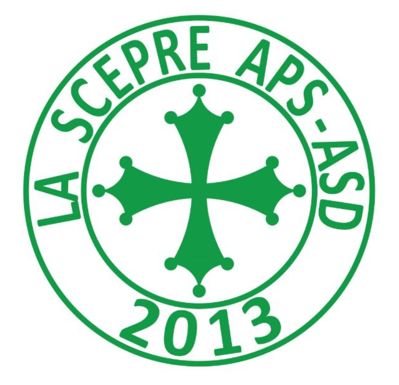
Circolo La Scepre A.S.D. – A.P.S.
Dal 2013 a Pisa: sport, tornei, rassegne culturali e vita di comunità.
La missione del nostro circolo è la promozione di attività sportive e di promozione sociale per i nostri tesserati. Il nostro obiettivo principale è fornire un ambiente accogliente e inclusivo, in cui i soci possano sviluppare le proprie capacità sportive e il loro benessere generale. Poniamo grande enfasi sull'importanza dei valori dell'associazionismo, come la solidarietà, la lealtà, il rispetto reciproco e il fair play. Attraverso la pratica sportiva vogliamo promuovere uno stile di vita attivo, creare legami sociali duraturi e favorire l'integrazione di tutte le persone che condividono la passione per lo sport.
Le nostre principali attività sportive e sociali:
Chi siamo
La storia del Circolo La Scepre Associazione Sportiva Dilettantistica APS ha inizio nel luglio del 2013, quando un gruppo di giovani si è riunito con l'obiettivo di creare questa associazione.
Nel corso degli ultimi dieci anni abbiamo assistito a un'evoluzione significativa, con cambiamenti profondi dei consiglieri e un notevole aumento del numero dei nostri soci. Abbiamo anche avuto la fortuna di coinvolgere le nuove generazioni, che hanno portato freschezza e vitalità alla nostra comunità.
Durante questo periodo sia il numero dei soci che la diversità delle attività offerte sono cresciuti in modo significativo. Il nostro impegno principale è coinvolgere attivamente le comunità nella nostra zona, attraverso una vasta gamma di attività adatte a tutte le età e a tutti gli interessi.
Il nostro obiettivo rimane quello di promuovere un senso di appartenenza, condivisione e inclusione nella nostra comunità locale. Continuiamo a evolverci costantemente, ascoltando le esigenze dei nostri soci. Siamo orgogliosi della nostra storia, ma guardiamo sempre avanti.
Attività ed Eventi
Volantini, classifiche e fasi finali delle manifestazioni del circolo. Le quote di partecipazione sono sempre libere (contributo volontario).
Rassegna conclusa con successo: 46 serate, oltre 1380 presenze complessive e una media di oltre 60 soci a serata.
Rassegna culturale · quota di partecipazione libera
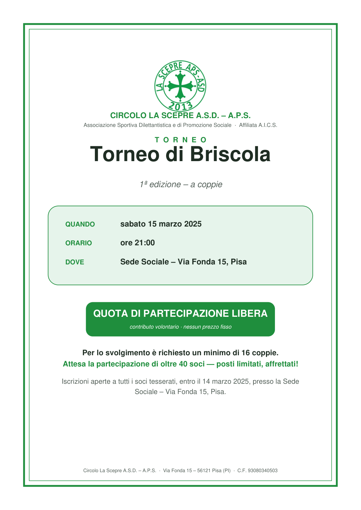
Ingrandisci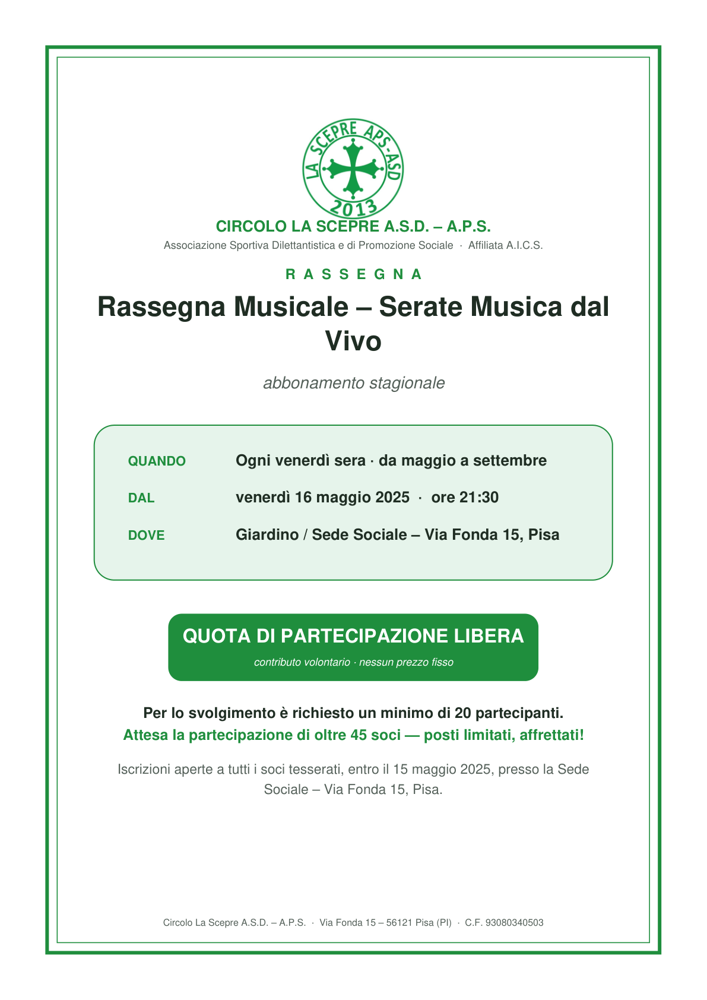
IngrandisciRassegna conclusa con successo: 18 serate, oltre 405 presenze complessive e una media di oltre 45 soci a serata.
Rassegna culturale · quota di partecipazione libera
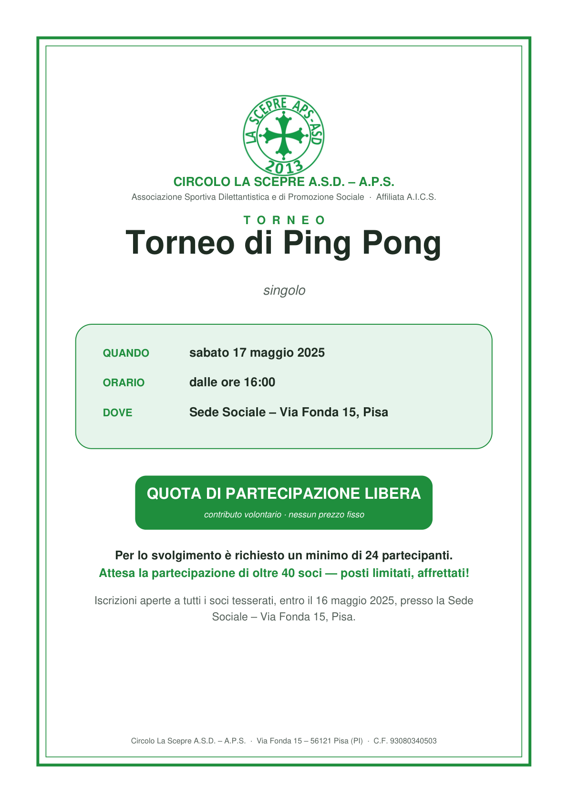
Ingrandisci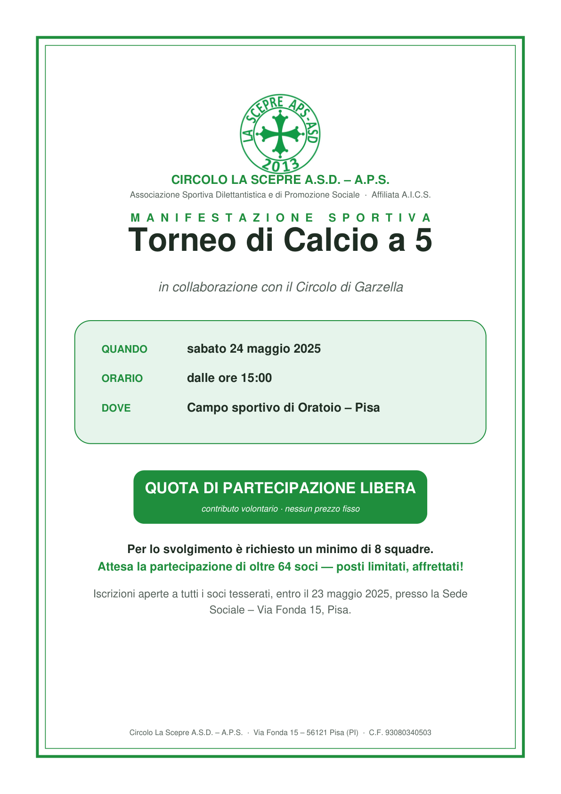
IngrandisciCapocannoniere: Alonzi Francesco (14 gol)
Rassegna conclusa con successo: 32 serate, oltre 800 presenze complessive e una media di oltre 50 soci a serata.
Rassegna culturale · quota di partecipazione libera
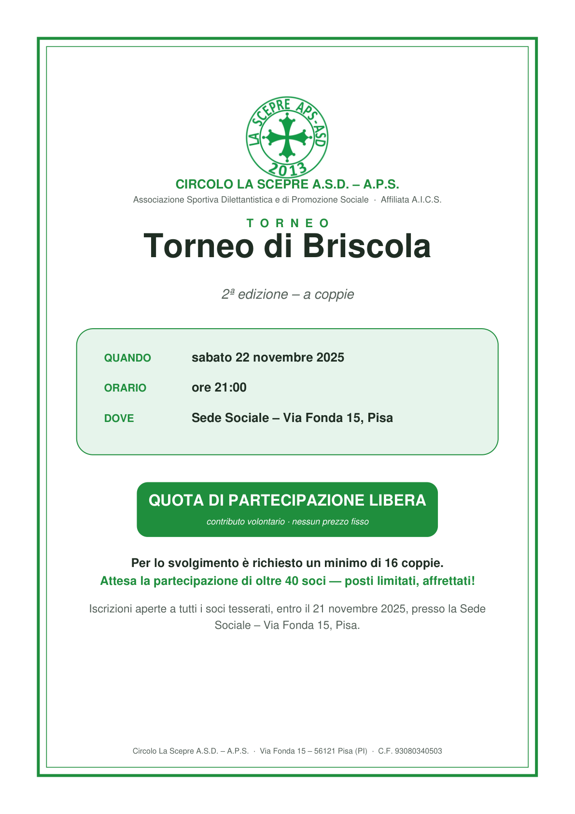
Ingrandisci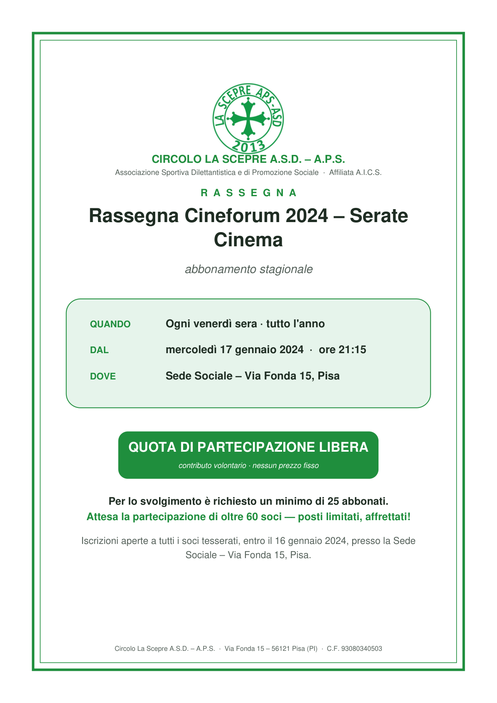
IngrandisciRassegna conclusa con successo: 46 serate, oltre 1380 presenze complessive e una media di oltre 60 soci a serata.
Rassegna culturale · quota di partecipazione libera
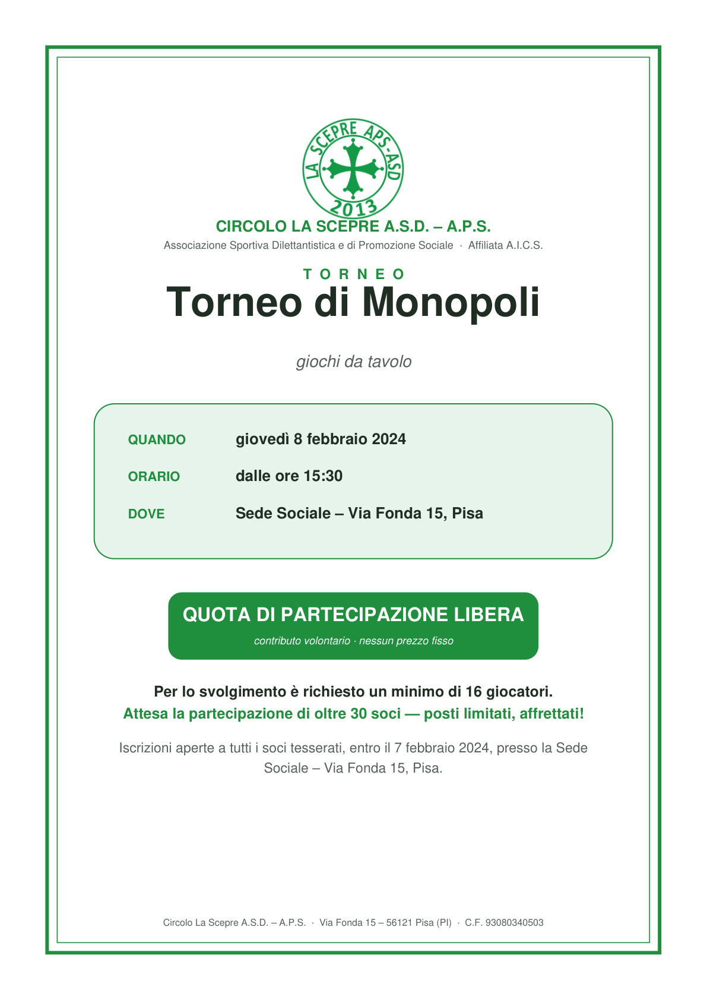
Ingrandisci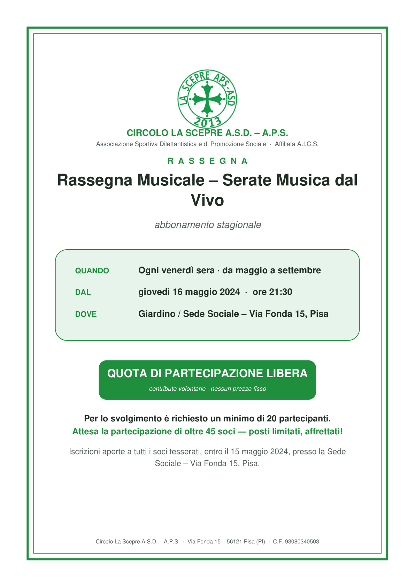
IngrandisciRassegna conclusa con successo: 18 serate, oltre 405 presenze complessive e una media di oltre 45 soci a serata.
Rassegna culturale · quota di partecipazione libera
Capocannoniere: Cateni Riccardo (11 gol)
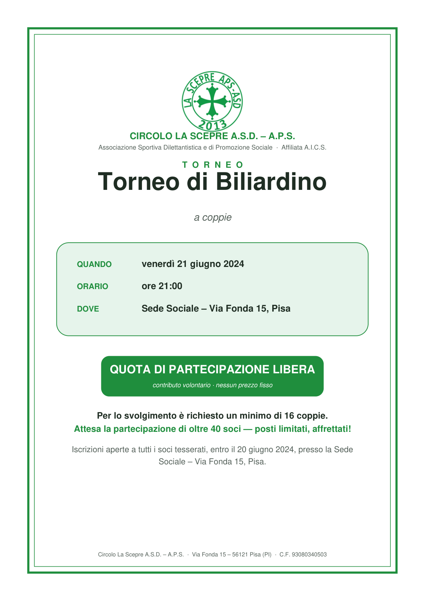
Ingrandisci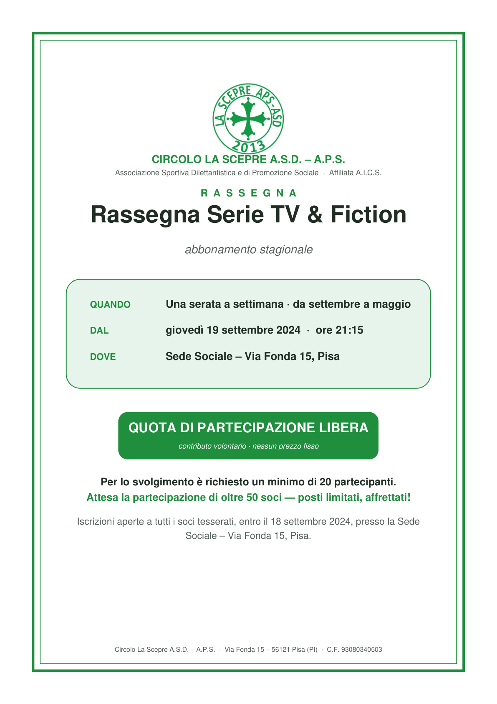
IngrandisciRassegna conclusa con successo: 32 serate, oltre 800 presenze complessive e una media di oltre 50 soci a serata.
Rassegna culturale · quota di partecipazione libera
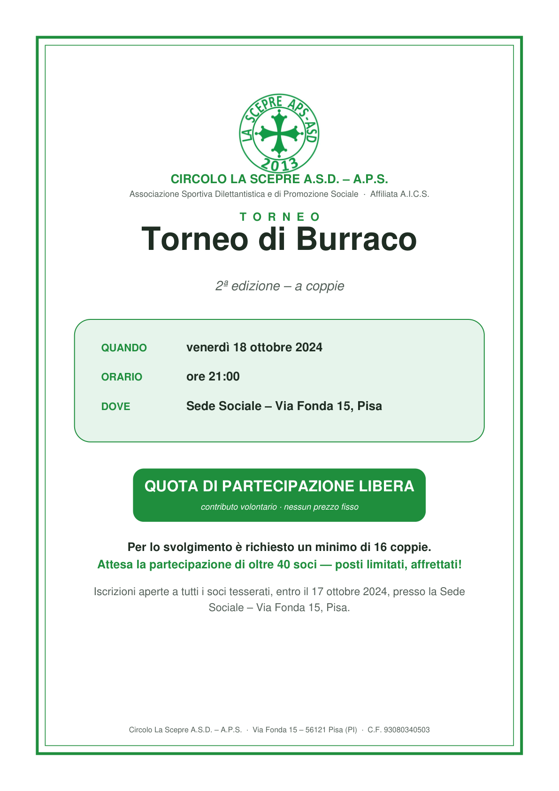
Ingrandisci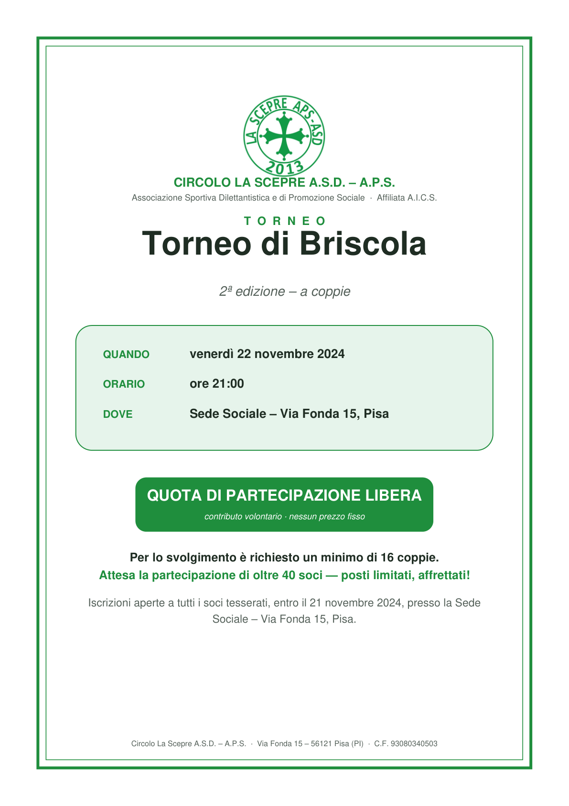
Ingrandisci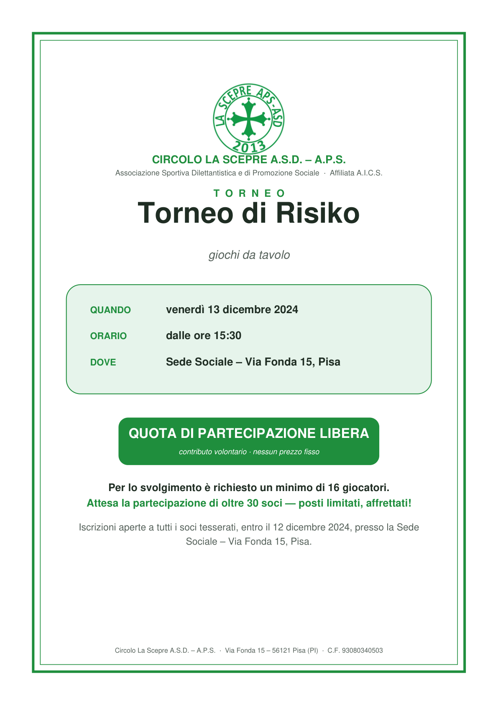
IngrandisciLe squadre e i campionati di calcio del circolo:
Trasparenza Amministrativa
Contatti
Circolo La Scepre A.S.D. – A.P.S.
Via Fonda 15 – 56121 Pisa (PI)
Affiliata A.I.C.S. · C.F. 93080340503
Per informazioni, tesseramento e prenotazioni: presso la sede sociale.